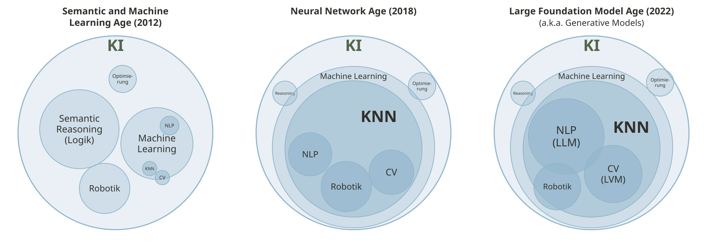
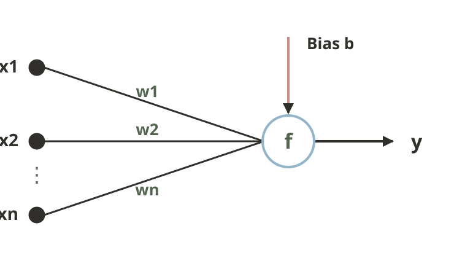
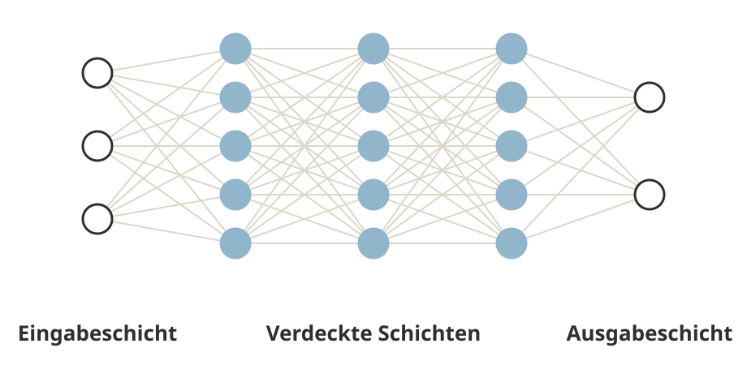
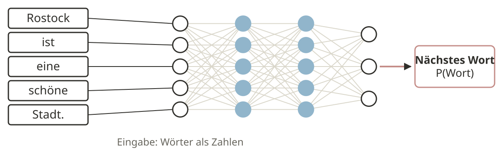
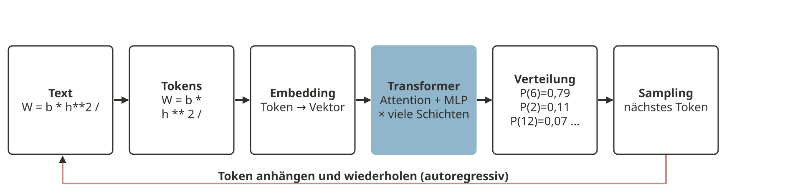
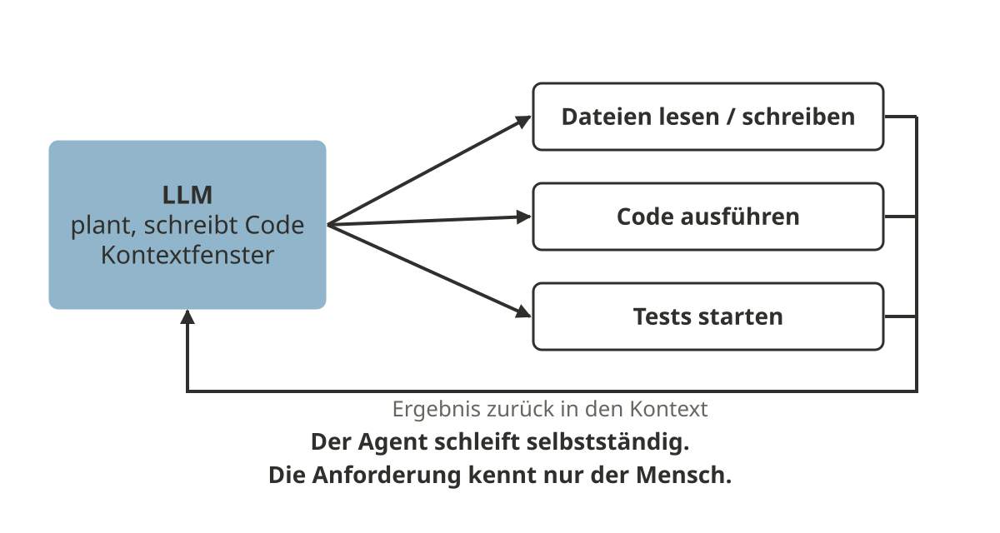
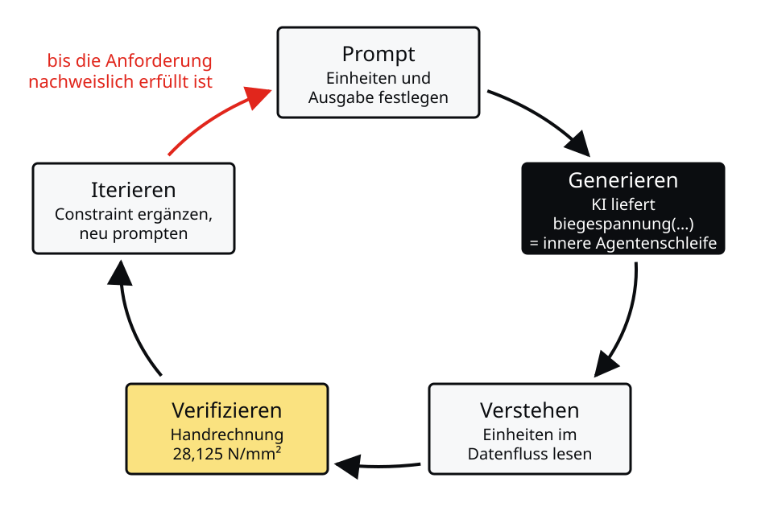
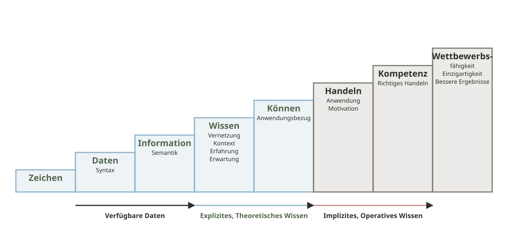
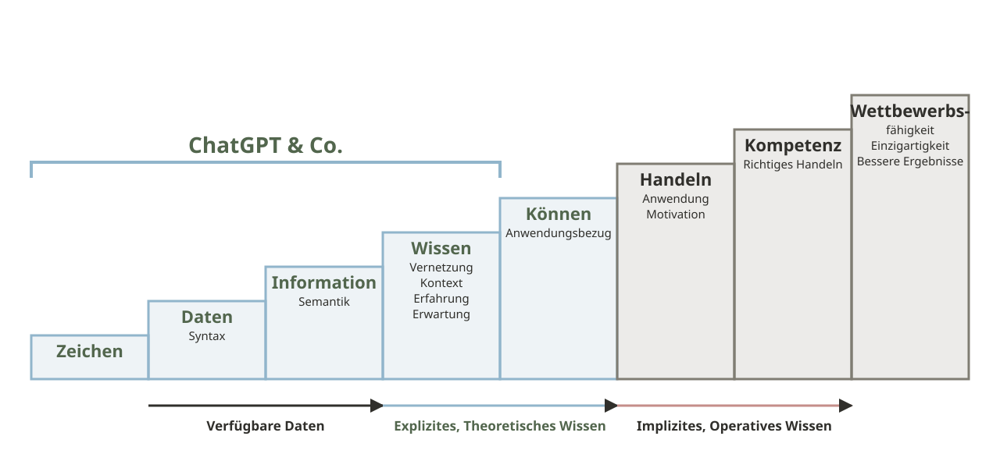

b, h = 200, 400 # Breite, Höhe in mm
M = 150 # Moment in kNm
W = b * h**2 / 6 # Widerstandsmoment in mm³
sigma = M / W # Spannung in N/mm²
print(f"Ergebnis: {sigma:.1e}")Ergebnis: 2.8e-05Joern Ploennigs · AI4SC
There’s a new kind of coding I call ‘vibe coding’, where you fully give in to the vibes, embrace exponentials, and forget that the code even exists.
— Andrej Karpathy, Beitrag auf X, 2025 (Karpathy 2025)
Prompt: „Berechne die Biegespannung eines Rechteckträgers.“
Ergebnis: 2.8e-05Was sehen Sie, wenn Sie den Code lesen?
Warum macht ein so leistungsfähiges System so einen Fehler?
KI-Assistenten können Code erzeugen, der ohne Fehlermeldung läuft und trotzdem falsch rechnet. Im Beispiel wird ein Moment in kNm durch ein Widerstandsmoment in mm³ geteilt; die Einheiten passen nicht zusammen, und die Spannung fällt um den Faktor 10⁶ zu klein aus. Python meldet dabei nichts, denn für den Rechner ist jede Zahl gültig. Wer den Code liest, erkennt das sofort; wer ihn nur ausführt, nicht. Dieses Beispiel begleitet uns durch die ganze Sitzung. Zunächst fragen wir, wie ein Sprachmodell zu einem solchen Ergebnis kommt.

Die Gebiete der Künstlichen Intelligenz haben sich in drei Zeitaltern verschoben. Im Semantic and Machine Learning Age (2012) stehen Semantic Reasoning (Logik), Machine Learning, Optimierung und Robotik nebeneinander. Im Neural Network Age (2018) wird Machine Learning zum dominierenden Gebiet, und Künstliche Neuronale Netzwerke (KNN) umfassen NLP, Robotik und Computer Vision (CV). Im Large Foundation Model Age (2022), auch Generative Models genannt, prägen Large Language Models (LLM) für die Sprachverarbeitung (NLP) und Large Vision Models (LVM) für die Bildverarbeitung (CV) die Neuronalen Netzwerke.

\[ y = f\left(b + \sum_{i=1}^{n} w_i x_i\right) \]
Um Fehler wie den obigen vorherzusehen, müssen wir verstehen, was ein Large Language Model (LLM) tatsächlich berechnet und was es nicht berechnet. Danach ordnen wir die gängigen Werkzeuge entlang ihrer Autonomie ein.
Künstliche neuronale Netzwerke (KNN, 1943) sind eine mathematische Nachbildung der Neuronen im menschlichen Gehirn. Ein Netzwerk setzt sich aus sehr vielen Neuronen zusammen, und jedes Neuron ist meist einfach aufgebaut: Die Eingänge \(x_1, \dots, x_n\) werden mit den Gewichten \(w_1, \dots, w_n\) multipliziert, und dazu wird ein Bias \(b\) addiert. Der Ausgang \(y\) ist die Summe davon, gefiltert mit einer Aktivierungsfunktion \(f(\cdot)\). Wir gewichten also die Eingänge nach Wichtigkeit. Die Aufgabe beim Lernen ist, die Gewichte und das Bias zu bestimmen, wir lernen also, welche Eingänge wichtig sind. Der Trick: Neuronale Netzwerke bestehen aus einfachen Bausteinen, die gut zu rechnen sind.

Tiefe Neuronale Netzwerke (DNN) enthalten sehr viele (3 bis 100) tiefe Schichten von Neuronen. Mit jeder Schicht steigt die Anzahl der Parameter multiplikativ, und man erhält tausende von Parametern. Ab 2011 führten zwei Entwicklungen zur Berechenbarkeit: die Parallelisierung der Berechnung in Grafikkarten mit tausenden von Recheneinheiten und bessere Algorithmen, um die sehr große Anzahl an Parametern schnell zu bestimmen. Der Trick: Mit den tieferen Schichten kann das Netzwerk Wissen besser abstrahieren, da wir Eingänge immer mehr zusammenführen, und verknüpfen, da wir mit jeder Schicht das abstrahierte Wissen besser verknüpfen und das Wichtige betonen.
Vaswani et al.: Attention Is All You Need, NeurIPS, 2017.

Große Sprachmodelle (Large Language Models, LLM, seit 2017) erhöhen die Anzahl der Parameter auf mehrere Milliarden. Die Netzwerke zerlegen Texte in Worte und lernen, mit welcher Wahrscheinlichkeit diese Worte im Text aufeinander folgen. Mit der Entdeckung der Transformer-Netzwerke (Vaswani u. a. 2017) konnte man diese Textzusammenhänge lernen. Der Trick besteht darin, dass das Netzwerk lernt zu abstrahieren, welche Worte in einem Text wichtig sind, und zu verknüpfen, welche Worte mit diesen wichtigen Worten über Sätze verknüpft sind. Wenn wir eine Anfrage an ChatGPT stellen, wird das umgekehrt, und ChatGPT generiert die wahrscheinliche Wortfolge für die Anfrage.

Attention: Jedes Token gewichtet alle vorherigen Tokens nach Relevanz.
Ein LLM verarbeitet keinen Text, sondern Token, also Wortteile oder Symbole eines festen Vokabulars. Jedes Token wird in einen Vektor eingebettet. Mehrere Dutzend Transformer-Schichten berechnen daraus Zwischendarstellungen; in jeder Schicht gewichtet der Attention-Mechanismus für jedes Token, welche vorherigen Tokens für die Fortsetzung relevant sind. Am Ende steht eine Wahrscheinlichkeitsverteilung über das gesamte Vokabular. Aus ihr wird ein Token gezogen, an die Eingabe angehängt, und der Vorgang wiederholt sich. Man nennt das autoregressive Generierung. Im Beispiel steht nach W = b * h**2 / mit hoher Wahrscheinlichkeit eine 6, weil diese Formel im Training oft vorkam. Die Wahrscheinlichkeiten im Bild sind illustrativ. Moderne Modelle haben Milliarden bis Billionen Parameter.
\[ \mathcal{L}(\theta) = -\sum_t \log P_\theta(x_t \mid x_{<t}) \]
Was dieses Signal nicht enthält:
Das Modell verallgemeinert Muster. Es schlägt nichts nach und rechnet nichts nach.
Beim Pre-Training minimiert das Modell den Vorhersagefehler für das nächste Token über sehr große Text- und Code-Sammlungen. Die Verlustfunktion bewertet nur, wie gut die tatsächliche Fortsetzung vorhergesagt wurde. Instruction-Tuning und Feedback von Menschen (Ouyang u. a. 2022) richten das Modell auf hilfreiche Antworten aus. In keinem dieser Schritte kommt ein Ergebnis einer Programmausführung oder eine Einheitenprüfung vor. Das Modell erzeugt deshalb Code, der zu seinen Trainingsmustern passt. Es ist kein Nachschlagewerk: Auch Code, der so nie in den Trainingsdaten stand, kann es neu zusammensetzen. Das erklärt sowohl seine Stärke als auch den Einheitenfehler im Beispiel.
Wer garantiert die Korrektheit? Bei einem LLM sind Sie es.
Programmcode verhält sich deterministisch: Dieselbe Eingabe liefert dieselbe Ausgabe, und Syntax- oder Typfehler führen zu einer Fehlermeldung mit Zeilenangabe. Ob die Formel im Code richtig ist, garantiert das nicht, wie unser Beispiel mit dem Einheitenfehler zeigt. Das Verhalten ist aber reproduzierbar und prüfbar. Ein Sprachmodell antwortet immer, auch wenn der Prompt unklar ist oder die richtige Antwort nirgends gelernt wurde, und dieselbe Eingabe kann andere Ausgaben liefern. Die Prüfung liegt hier bei den Anwenderinnen und Anwendern. Verifikation ist deshalb Pflicht und kein optionaler Zusatzschritt.
Ploennigs et al.: Building foundation models - potentials, challenges and research directions for using LLM and LVM in AEC, EC3, 2025.
Ein Ingenieur übersetzt ein Problem in ein mentales Modell und analysiert darin abstrakte Zusammenhänge: Er versteht, warum und wann sich ein Balken biegt. Er kann kausale Schlussfolgerungen ableiten und prüfen, ob das Ergebnis physikalisch sinnvoll ist, er kann also rechnen. Ein LLM dagegen übersetzt ein Problem in ein sprachliches Muster. Es hat kein mentales Modell abstrakter Zusammenhänge und weiß nur, dass „Balken“ und „biegen“ korrelieren. Es sagt nur statistisch wahrscheinliche Wörter voraus und kann nicht prüfen, ob der Output sinnvoll ist, es kann also nicht rechnen (Ploennigs u. a. 2025).
Die Gefahren neuer Grundlagen-KI-Modelle lassen sich nach den drei Fähigkeiten Verstehen, Generieren und Anpassen ordnen. Beim Verstehen fehlen räumliches und numerisches Verständnis sowie das logische Erschließen komplexer Zusammenhänge, obwohl einfache funktionieren. Statistisch irrelevante, aber fachlich wichtige Details werden ausgelassen, und beim Übersetzen entstehen False-Friends, die in der Domäne andere Bedeutungen haben. Beim Generieren treten Halluzinationen von falschen Inhalten und Fehlassistenz durch fehlerhafte Ratschläge auf. Generierte Inhalte können inkonsistent sein (mehrere Sichten), Vorurteile und Falschaussagen in den Trainingsdaten werden überbetont, generierte Texte werden von niemandem mehr gelesen (Ineffizienz), und durch das Lernen von Korrelationen in Trainingsdaten entstehen Fehloptimierungen. Beim Anpassen fehlt die BIM-Unterstützung zur Datenverarbeitung in KI-Modellen, es fehlen große Datensätze, die Black-Box-Modelle sind unerklärlich, das regelmäßige Training ist teuer, und das Wissen zu den Modellen fehlt.
Verstehen
Generieren
Anpassen
Daten: Pursnani u. a. (2023), Oblitas, Adeeb, und Cruz-Noguez (2025). Statik und Tragwerke bleiben am schwächsten.
Pursnani et al.: Performance of ChatGPT on the US fundamentals of engineering exam, Computers and Education: AI, 2023.
Oblitas, Adeeb & Cruz-Noguez: Performance of AI Chatbots on the Fundamentals of Engineering Civil Exam, Discover Artificial Intelligence, 2025.
Kann KI Ingenieuraufgaben allein lösen? Das hängt davon ab, welche Fähigkeit wir betrachten. Beim Verstehen sind Zusammenfassen und Allgemeinwissen zu Bauen und Architektur Stärken, numerisches und räumliches Verständnis sowie Detailwissen zur Baudomäne fehlen. Beim Generieren gelingen Übersetzen und Bilder, bei Unwissenheit halluziniert das Modell und erzeugt keine wiederholbar zusammenhängenden Ergebnisse. Beim Anpassen lässt sich das Wissen über RAG erweitern und das Modell auf Spezialwissen abstimmen, an komplexe Ingenieurprobleme lässt es sich dennoch nicht anpassen. Die Aufgaben der US-amerikanischen Ingenieur-Grundlagenprüfung zeigen das: GPT-4 erreichte 2023 in der Statik 14 Prozent, ChatGPT o3 2025 immerhin 50 Prozent, in der Tragwerksplanung 30 Prozent. Statik und Tragwerke bleiben die schwächsten Gebiete (Pursnani u. a. 2023; Oblitas, Adeeb, und Cruz-Noguez 2025).
Die Technik hinter den heutigen Assistenten ist jung. Die Transformer-Architektur (Vaswani u. a. 2017) ersetzte 2017 rekurrente Netze durch den Attention-Mechanismus. GPT-3 (Brown u. a. 2020) zeigte 2020, dass ein ausreichend großes Modell Aufgaben aus wenigen Beispielen im Prompt lernt. Codex, das Modell hinter GitHub Copilot, wurde 2021 auf Quellcode feinjustiert (Chen u. a. 2021). Mit Instruction-Tuning und Feedback von Menschen (Ouyang u. a. 2022) entstanden 2022 Chat-Assistenten. Seit 2025 verbreiten sich Coding-Agenten, die Dateien lesen, Code ausführen und Tests starten. Karpathy prägte für das ungeprüfte Übernehmen solcher Ergebnisse den Begriff vibe coding (Karpathy 2025).

Autonomie der Werkzeuge:
Ein Agent erweitert das Sprachmodell um eine Schleife: Das Modell plant einen Schritt, ruft ein Werkzeug auf, etwa zum Lesen einer Datei, zum Ausführen von Code oder zum Starten von Tests, und erhält das Ergebnis zurück in sein Kontextfenster. So arbeitet es mehrere Schritte selbstständig ab. Die drei Werkzeuge dieses Kurses unterscheiden sich vor allem im Grad der Autonomie. GitHub Copilot liefert Inline-Vorschläge im Tippfluss, was bequem ist, aber dazu verleitet, Code ohne Lesen zu akzeptieren. Cursor kombiniert Editor und Chat. Claude Code, das Werkzeug dieses Kurses, arbeitet im Terminal oder als VS-Code-Erweiterung mit Sicht auf das ganze Projekt. Je höher die Autonomie, desto wichtiger ist die Prüfung, denn der Agent kennt Ihre Anforderung nur aus dem Prompt.

Jeder Schritt braucht eine eigene Kompetenz: Anforderungen formulieren, Code lesen, Testen denken.
→ 01a_Ueberblick (S01): Kursüberblick und Symbollegende
Weil der Agent nur so gut ist wie die Anforderung, die er erhält, brauchen Ingenieurinnen und Ingenieure eine eigene, äußere Schleife. Sie ist die Arbeitsmethode des ganzen Kurses.
Der Zyklus besteht aus fünf Schritten: Prompt, Generieren, Verstehen, Verifizieren und Iterieren. Nur der zweite Schritt gehört der KI, die übrigen vier gehören Ihnen. Am Beispiel heißt das: Sie legen Einheiten und Ausgabegröße fest, die KI liefert eine Funktion, Sie verfolgen die Einheiten im Datenfluss, prüfen das Ergebnis gegen die Handrechnung von 28,125 N/mm² und ergänzen bei Abweichung den fehlenden Constraint im Prompt. Der Zyklus wird wiederholt, bis die Anforderung nachweislich erfüllt ist. Er verlangt genau die Fähigkeiten, die dieser Kurs aufbaut: Python-Lesekompetenz, Anforderungsformulierung und Testdenken.
biegespannung(b_mm, h_mm, M_knm)„Du bist Python-Entwickler für Tragwerksplanung.
Eingaben: b und h in mm, M in kNm.
Schreibebiegespannung(b_mm, h_mm, M_knm) -> float.
Rechne intern in N und mm, Ergebnis in N/mm².
Keine externen Bibliotheken.
Mit Docstring, der die Einheiten nennt, und Typ-Hints.“
→ 04a_Anforderungen (S04): Anforderungsspezifikation als Quelle eines guten Prompts
Ein guter Prompt hat fünf Elemente: Rolle, Kontext, Aufgabe, Constraint und Ausgabeformat. Der vage Prompt „Berechne die Biegespannung“ lässt alle offen: Einheiten, Funktionsname, Rückgabe, erlaubte Bibliotheken. Die KI muss raten, und sie rät plausibel. Der ausformulierte Prompt legt diese Punkte fest und ist damit eine Anforderungsspezifikation im Sinne der Softwareentwicklung. Je präziser der Prompt, desto weniger Iterationen sind nötig. Die systematische Formulierung von Anforderungen vertiefen wir in Sitzung S04.
Vager Prompt:
2.8e-05Läuft, aber 10⁶-fach zu klein
Prompt mit Einheiten-Constraint:
28.125Einheiten im Namen, Ergebnis stimmt
Beide Funktionen sind syntaktisch einwandfrei, und beide laufen ohne Fehlermeldung. Die erste entspricht dem Ergebnis des vagen Prompts: Sie rechnet mit gemischten Einheiten. Die zweite entsteht, wenn der Prompt die Einheiten festlegt: Die Parameternamen tragen die Einheiten, die Umrechnung steht explizit im Code, und der Docstring nennt die Einheit des Ergebnisses. Das ist kein Fehler des Modells, sondern ein unvollständiger Prompt. Die Ingenieurin oder der Ingenieur ist für die vollständige Spezifikation verantwortlich.
Wenn KI eine Funktion generiert:
→ 08a_UnitTest (S08): Tests als primäres Verifikationswerkzeug
Signatur und Docstring beschreiben das Was, die Implementierung das Wie. Wenn das Was nicht stimmt, ist das Wie irrelevant. Deshalb beginnt die Lesestrategie mit dem Vertrag der Funktion. In biegespannung(b_mm, h_mm, M_knm) stehen die Einheiten bereits in der Signatur; in biegespannung_v1(b, h, M) fehlen sie, und genau dort lag der Fehler. Die Reihenfolge, den Test vor der Implementierung zu lesen, ist eine Methode dieses Kurses und kein etablierter Branchenbegriff. Wer zuerst den Test formuliert, liest aus der Anforderungsperspektive statt aus der Implementierungsperspektive.
--------------------------------------------------------------------------- AssertionError Traceback (most recent call last) Cell In[13], line 2 1 erwartet = 28.125 # Handrechnung in N/mm² ----> 2 assert abs(biegespannung_v1(200, 400, 150) - erwartet) < 1e-3 AssertionError:
Eigener Test: Was passiert bei h = 0? Welches Verhalten verlangt die Anforderung?
→ 08a_UnitTest (S08): Unit-Tests und Test-first-Prompting
Der Test besteht aus einer einzigen Zeile: Die Handrechnung liefert 28,125 N/mm², und die Funktion muss diesen Wert bis auf eine Toleranz treffen. Gegen die erste Funktion schlägt der Test fehl, gegen die zweite besteht er. Der Test entsteht aus der Anforderung und nicht aus dem generierten Code, er kann deshalb nicht denselben Denkfehler enthalten. Bei h gleich null bricht die Funktion mit einer Division durch null ab. Ob das gewollt ist oder ob die Anforderung eine eigene Fehlermeldung verlangt, entscheidet die Anforderung, nicht die KI.

North, K. (2011): Wissensorientierte Unternehmensführung. Wertschöpfung durch Wissen.
Die Wissenstreppe nach North (North 2011) erweitert die Wissenspyramide (Sitzung S03): Auf Zeichen folgen Daten (Syntax), Information (Semantik), Wissen (Vernetzung, Kontext, Erfahrung, Erwartung), Können (Anwendungsbezug), Handeln (Anwendung, Motivation), Kompetenz (richtiges Handeln) und Wettbewerbsfähigkeit (Einzigartigkeit, bessere Ergebnisse). Die unteren Stufen sind verfügbare Daten, die mittleren explizites, theoretisches Wissen und die oberen implizites, operatives Wissen.

North, K. (2011): Wissensorientierte Unternehmensführung. Wertschöpfung durch Wissen.
ChatGPT und vergleichbare Modelle decken die Stufen von den Zeichen bis zum Wissen ab. Das implizite, operative Wissen, also Handeln, Kompetenz und Wettbewerbsfähigkeit, liegt nicht in den Modellen.
Die KI ist die Junior-Entwicklerin, Sie sind der Senior, der den Code abnimmt.
Beim Einsatz von KI-Werkzeugen übernehmen Ingenieurinnen und Ingenieure drei Rollen. Als Auftraggeber formulieren sie die Anforderung so präzise, dass die KI passenden Code erzeugen kann. Als Leser verstehen sie den generierten Code mit seinen Annahmen und Grenzen. Als Verifizierer prüfen sie, ob das Ergebnis die Anforderung erfüllt. Die Metapher von Junior und Senior ist bewusst gewählt: Eine gute Senior-Entwicklerin oder ein guter Senior-Entwickler liest den Code gründlich, stellt Fragen, fordert Änderungen und gibt erst dann das Okay. Die Verantwortung für den Code in Produktion bleibt bei den Menschen; KI-Code entbindet nicht von der Haftung.
Vier Fehlerarten sollten Sie beim Lesen gezielt suchen: erfundene Funktionen oder Bibliotheken, stillschweigend falsche Einheiten, vergessene Randfälle wie leere Listen oder Division durch null und Code, der ohne Fehlermeldung das Falsche berechnet. Hinzu kommen Fragen des Datenschutzes und der Lizenzen, wenn Projektdaten oder fremder Code an KI-Werkzeuge gelangen.
Das Prüfen von KI-Output ist ermüdend (“AI Fatigue”) und nicht trivial, Beispiel Softwareentwicklung:
„Entwickler erwarteten, mit KI 24 % schneller zu sein, und selbst nachdem sie die Verlangsamung erlebt hatten, glaubten sie noch, KI habe sie um 20 % beschleunigt.“
— METR (2025)
METR: Measuring the Impact of Early-2025 AI on Experienced Open-Source Developer Productivity, 2025.
CodeRabbit: GitHub Gives Maintainers a Throttle for the AI Pull Request, 2026.
Auch wenn KI nicht allein arbeiten kann, bleibt das Prüfen nicht automatisch beim Menschen gut aufgehoben. Prüfen ist ermüdend (“AI Fatigue”) und nicht trivial. In der Softwareentwicklung wächst der KI-Output schneller als die Review-Kapazität: Auf GitHub gibt es viermal mehr Pull Requests (CodeRabbit 2026). Die METR-Studie ließ 16 erfahrene Open-Source-Entwickler an 246 echten Issues arbeiten. Sie erwarteten, mit KI 24 Prozent schneller zu sein, und glaubten auch nach der Studie noch an 20 Prozent Beschleunigung. Tatsächlich waren sie 19 Prozent langsamer. Gefühlte und gemessene Produktivität liegen damit 39 Prozentpunkte auseinander (METR 2025).
Daten: Deskilling (Budzyń u. a. 2025); No-Skilling (Shen und Tamkin 2026)
Teufelskreis Deskilling
Mehr KI-Assistenz
Cognitive Offloading
Deskilling
Never Skilling
Fernandes et al.: AI makes you smarter but none the wiser, Computers in Human Behavior, 2026.
Gerlich, M.: AI Tools in Society: Impacts on Cognitive Offloading and the Future of Critical Thinking, Societies, 2025.
Budzyń et al.: Endoscopist deskilling risk after exposure to artificial intelligence in colonoscopy, Lancet Gastroenterology & Hepatology, 2025.
Ke et al.: AI-induced never-skilling in medical education, Nature Medicine, 2026.
Selbst wenn Menschen prüfen, müssen sie dazu in der Lage bleiben. Nutzende überschätzen ihre Fähigkeit, KI-Output zu prüfen (Fernandes, Kosch, und Woźniak 2026), und die KI-Nutzung führt zu Cognitive Offloading und sinkendem kritischem Denken (Gerlich 2025). Erfahrene verlieren dadurch Fähigkeiten (Deskilling): In der Studie zur Koloskopie sank die Adenom-Erkennungsrate ohne KI-Hilfe von 28,4 auf 22,4 Prozent, nachdem die Ärztinnen und Ärzte KI genutzt hatten (Budzyń u. a. 2025). Einsteiger erlernen die Grundlagen gar nicht erst (Never-Skilling): Beim Code-Verständnis erreichten Lernende, die mit KI gearbeitet hatten, 50 statt 67 Prozent (Shen und Tamkin 2026; Ke u. a. 2026). So entsteht ein Teufelskreis: Mehr KI-Assistenz führt zu Cognitive Offloading, dieses zu Deskilling und am Ende zu Never-Skilling.
Es braucht Zusammenarbeit, um Erfahrungen auszutauschen und Leitlinien zu entwickeln.
Den Teufelskreis durchbrechen wir auf drei Ebenen. In der Bildung geht es um Weiterbildung für strukturierte KI-Nutzung, Ausbildung für kritische Kompetenzen und eine Kultur des Lernens und kritischen Denkens. In der Organisation braucht es Prozesse zur Prüfung von KI-Ergebnissen, digitale Werkzeuge zur Dokumentation im BIM und Führung, die KI-Resilienz etabliert. Bei den Rahmenbedingungen gehören Forschung zur Bewertung von KI-Resilienz, Regulierung der Randbedingungen und Offenheit für eine positive KI-Vision dazu. Dafür braucht es Zusammenarbeit, um Erfahrungen auszutauschen und Leitlinien zu entwickeln.
| Block | Thema | Trainierter Schritt |
|---|---|---|
| 1 | Computational Foundations | Verstehen |
| 2 | Computational Engineering | Prompt |
| 3 | Programming Foundations | Verstehen, Iterieren |
| 4 | Verification & Quality | Verifizieren |
| 5 | Problem Classes | Prompt, Verifizieren |
| 6 | Data Management | ganzer Zyklus |
Jede Übung trainiert mindestens einen Schritt des Zyklus.
Der agentische Zyklus verteilt sich über alle sechs Kursblöcke (S01 bis S13). In Block 1 steht das Verstehen im Vordergrund: Code lesen, Datentypen erkennen. Block 2 trainiert die Formulierung von Anforderungen als Prompt. In Block 3 lesen und überarbeiten wir Kontrollstrukturen und Funktionen. Block 4 formalisiert die Verifikation durch Unit Tests und Code Review. In Block 5 wenden wir Prompt und Verifikation auf typische Problemklassen an, und Block 6 verbindet alle Schritte in datenbankgestützten Projekten. Die Zuordnung ist eine Orientierung, jede Sitzung kann weitere Schritte berühren.